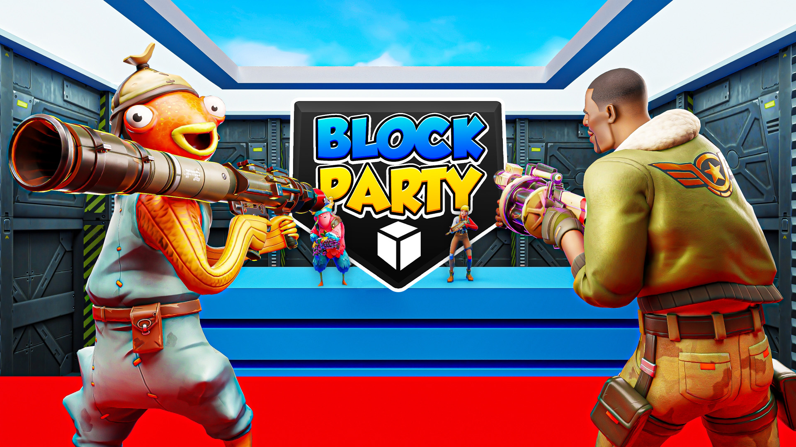
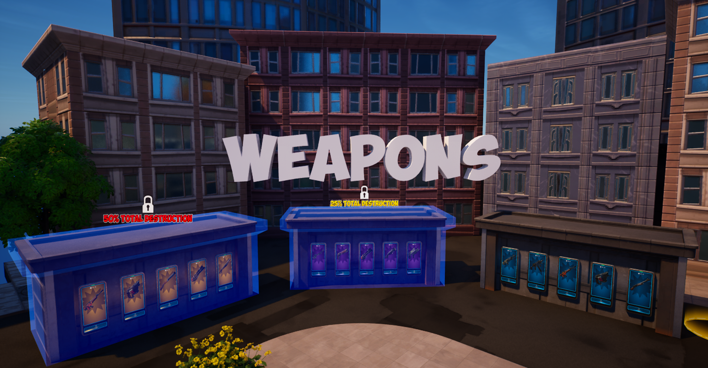

Block Party: Total Destruction
A team-based shooter focused on destroying the opposing team's tower of blocks, driven by a "destruction economy" that keeps both sides in the fight.

Overview
Block Party: Total Destruction is a team-based shooter focused on destroying the opposing team's tower of blocks. It features a curated selection of weapons that are unlocked though a "destruction economy" called Total Destruction. As the match progresses, the total amount of blocks destroyed will change the available loadouts of the players on both teams. This allows players on both sides to have a chance at changing the tides of play, without giving one team too much of an upper hand.
In-Game Screenshots
The design of this game changed radically several times, initially featuring a much larger loot pool and an economy based on earning currency from eliminations and objectives. The game was quite complex and led to a lot of confusion during early playtests. This led me to fundamentally rework the entire game, swapping the objective from destroying your own tower to your opponents, and then reducing the amount of weapon/loadout options by 90%. I also massively reduced the lobby space to better guide players to loadouts and then the PvP objective.
Further playtests and design sprints led me to an economy not based on eliminations but rather on the core of the game's original objective: destruction. I also wanted to deal with the issue of snowballing. The team in the lead could, in many cases, rapidly snowball to victory, leaving the other team in the dust. The Total Destruction system accounts for this by rewarding players who destroy blocks quickly, but it also gives the losing team a chance to catch up if they play well.
Total Destruction Example
